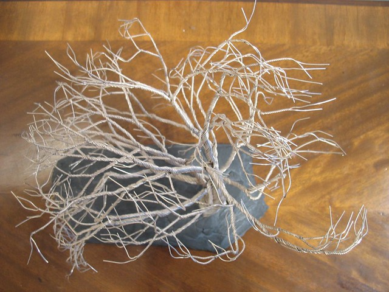

How to create intricate wire-wrapped bonsai trees
By: Lila
Introduction
Bonsai trees have been cultivated for centuries, and their popularity only seems to increase with time. These miniature trees represent a blend of art and horticulture, requiring both skill and patience to create. If you're looking to take your bonsai game a step further, consider trying your hand at wire-wrapped bonsai trees. This technique allows you to shape the tree into intricate designs, giving you a unique piece of living art that you can enjoy for years to come.
Before you get started, it's important to understand the basics of bonsai trees. These are not simply miniature versions of regular trees – they are carefully pruned and trained to maintain a specific shape and size. Bonsai trees require careful attention to detail, including regular watering, fertilizing, and pruning. Wire-wrapping takes this a step further by allowing you to shape your tree using thin wire. This technique is particularly useful for creating more complex designs, such as braids or spirals.
To begin, you'll need a healthy bonsai tree and a few supplies. These include wire cutters, pliers, and thin wire – typically copper or aluminum. You'll start by wrapping the wire around the branches or trunk of the tree, slowly manipulating it to create your desired shape. As you work, be sure to avoid wrapping too tightly, which can damage the tree's delicate bark.
With patience and practice, you can create stunning wire-wrapped bonsai trees that are sure to impress. Whether you're a seasoned bonsai enthusiast or just getting started, this technique is a fun and creative way to cultivate your skills and create a one-of-a-kind piece of living art.
Materials Needed
Crafting intricate wire-wrapped bonsai trees is no easy feat – but with the right tools and materials, it's definitely achievable! Before you dive into the art of bonsai, however, take the time to gather all the necessary materials to set yourself up for success.
One crucial tool in bonsai-making is wire. Specifically, bonsai wire is used to shape and manipulate the branches and trunk of the bonsai tree. Copper wire is perfect for beginners, as it is easy to work with and comes in a variety of colors and gauges. Choose a gauge that is appropriate for the size of your bonsai tree – thinner wire for smaller trees, and thicker wire for larger trees.
In addition to wire, you will also need a set of bonsai cutters. These specialized cutters are designed to cleanly snip away branches and foliage without damaging the tree. Look for high-quality cutters with sharp edges and comfortable grips to make your bonsai-making experience even easier.
A good pair of pliers is another must-have tool. Pliers allow you to twist and bend the wire with precision, and are also useful for making adjustments and correcting mistakes.
Aside from tools, you'll need to choose your bonsai tree and a pot to match. Opt for a tree with a sturdy trunk and roots that will support the wire and hold its shape. Keep in mind that wire will eventually leave marks on the tree, so select a species that can handle some scarring and will still look beautiful.
With these tools and materials in hand, you'll be well on your way to crafting stunning wire-wrapped bonsai trees that are sure to impress!
Step 1: Preparing the Bonsai Tree
Creating intricate wire-wrapped bonsai trees is a delicate process that requires patience and precision. Bonsai trees are miniature versions of trees grown in pots, and they require special attention to achieve the desired effect. This subheading will provide you with useful tips for preparing your bonsai tree for the wire-wrapping process.
While you can purchase a pre-grown bonsai tree or grow one from scratch, it's best to start with a young tree of your choosing. This allows you to shape the tree to your liking and make it your own.
Before you start the wire-wrapping process, you'll need to prepare the bonsai tree by pruning it. Pruning encourages new growth and influences the shape of the tree. Start by removing any dead, damaged, or unwanted branches. Then, trim back any branches that are too long to balance the tree's shape evenly.
Once pruning is complete, it's time to wire the branches. This technique allows you to bend the branches in the desired direction while the tree is still flexible. Begin by choosing the correct thickness and strength of wire. It's essential to use a wire that is not too strong, as it can damage the branches or trunk of the tree.
Next, wrap the wire around the branches, starting at the base of the trunk and working upwards in a spiral motion. Be careful not to wrap the wire too tightly or too loosely. It should be snug enough to hold the branch in place but not so tight that it damages the bark or cuts off circulation.
Once you've wrapped all the branches and shaped the tree to your liking, you're ready to move on to the next step in creating your wire-wrapped bonsai tree. Stay tuned for more helpful tips and tricks on how to create intricate wire-wrapped bonsai trees.
Step 2: Wrapping the Trunk
The art of creating wire-wrapped bonsai trees is a unique skill that requires careful precision and patience. While there are many steps involved in creating these intricate trees, wrapping the trunk is undoubtedly one of the most important. This is the step that creates the lifelike bark and texture of the trunk, giving the tree its signature look.
When wrapping the trunk, it is crucial to select the right wire thickness, as this will greatly impact the final result. In general, you'll want to use a thicker wire for larger trees and a thinner wire for small ones. The wire should also be flexible enough to mold around the branches and trunk but strong enough to hold its shape.
To begin wrapping the trunk, first, place the wire at the base of the tree, leaving a tail long enough to wrap around the base of the trunk a few times. Begin to wrap the wire around the trunk, being sure to keep it snug against the bark. As you wrap, pull the wire tight and twist occasionally to keep the wire tightly bound to the trunk.
Once you have wrapped the trunk a few times, it's time to start creating the texture. To do this, you'll need to create small bends and twists in the wire at regular intervals. These bends should mimic the natural texture of bark, so keep your movements loose and random.
As you wrap and twist the wire, you'll start to see the trunk take shape. You can continue to add texture until you achieve the desired look. Be sure to check for any areas that may need additional wrapping or texture before moving on to the branches.
Wrapping the trunk is a crucial step in creating a wire-wrapped bonsai tree that looks like it was plucked straight from nature. With patience and practice, you can master this skill and create stunning trees that will impress all who see them.
Step 3: Wiring the Branches
Creating intricate wire-wrapped bonsai trees is a skill that requires patience, creativity, and attention to detail. As you progress through the steps in this process, you will learn the techniques required to transform a simple tree into a stunning work of art. Step 3 of this process involves wiring the branches, which is a critical component of shaping the tree into the desired form.
Wiring the branches of your bonsai tree requires careful consideration of the tree's structure and form. Before getting started, it is essential to have a clear understanding of the design you want to achieve. This step involves wrapping copper or aluminum wire around the branches, which allows you to bend and shape them to your liking.
One of the essential things to keep in mind is the thickness of the wire. The gauge of the wire should match the size of the branch you are shaping. Heavier branches will require thicker wire, while smaller branches need a delicate touch. It is also crucial not to wrap the wire too tightly around the branch, as it may cause damage to the tree's delicate bark.
When wiring the branches, it's crucial to take into account the direction that you want the branch to grow. Make sure that you wrap the wire in the direction that you want the branch to grow and leave a little bit of slack to allow the tree to grow comfortably. It's important to be patient at this stage, take your time to shape each branch precisely the way you want it to look.
In summary, wiring the branches is a critical step in creating intricate wire-wrapped bonsai trees. It requires patience, creativity, and attention to detail. Remember to match the gauge of your wire to your branch's size, wrap the wire in the direction you want the branch to grow, and be patient as you shape each branch to perfection. With a little bit of practice, you'll soon be well on your way to creating stunning bonsai trees that are sure to impress.
Step 4: Creating Branches
When it comes to creating intricate wire-wrapped bonsai trees, creating branches is a crucial step. Not only do they add depth and dimension to your design, they also help create the illusion of a real tree. However, creating branches can be a bit tricky, especially if you're new to wire-wrapping. In this step-by-step guide, we'll show you how to create branches that will make your bonsai tree look like the real deal.
Before you begin this step, make sure you have all the necessary tools and materials. You'll need wire cutters, pliers, and small gauge wire. Once you have everything you need, start by wrapping your wire around the trunk of your bonsai tree. Use your pliers to twist the wire tightly together, making sure it's secure.
Next, decide where you want your branches to be. Typically, bonsai trees have multiple branches at different intervals along the trunk. Once you have an idea of where you want your branches to be, wrap a piece of wire around the trunk at that location. Then, gradually bend the wire into the shape of a branch. Use your pliers to adjust any curves or angles until you're happy with the shape.
Once you have your first branch, repeat the process for each additional branch. Make sure your branches are evenly spaced and positioned at different heights along the trunk. Keep in mind that each branch will likely require multiple wires wrapped together to create the desired thickness.
As you create each branch, don't be afraid to make adjustments as needed. Bonsai trees are meant to look organic and natural, so a little asymmetry is perfectly fine. Once all of your branches are in place, use your pliers to shape them and add any desired texture.
Creating branches can be a challenging but rewarding part of wire-wrapping bonsai trees. With some practice and patience, you'll soon be able to create intricate designs that will wow your friends and family. Keep exploring our website for more tips and tricks on bonsai tree artistry.
Step 5: Adding a Base
When it comes to creating intricately wire-wrapped bonsai trees, the base is just as important as the tree itself. Not only does it provide stability and balance, but it also serves as a finishing touch that can take your creation to the next level. In step five of our guide, we’ll go over the process of adding a base to your wire-wrapped bonsai tree.
Before getting started, you’ll need to gather your materials. This includes a sturdy and flat base (such as a piece of wood or stone), as well as your wire-wrapped tree and any additional decorative elements you may want to include.
First, position your wire-wrapped tree on the base and make sure it’s securely attached. Depending on the size and weight of your tree, this may require drilling holes into the base or using strong adhesive.
Once your tree is firmly in place, you can start adding any decorative elements you’d like. This could include moss, small rocks, or even miniature figurines. Be creative and let your imagination run wild!
Finally, don’t forget to take a step back and examine your work. Does it look balanced and visually appealing? Are there any areas that could use some additional flourishes? Make any necessary adjustments until you’re completely satisfied with your creation.
Adding a base is a crucial step in the process of creating intricately wire-wrapped bonsai trees. By following these simple steps, you’ll be able to elevate your creation to new heights of beauty and artistry. So go ahead and give it a try – your inner artist will thank you for it!
Step 6: Finishing Touches
When you finally arrive at Step 6, you're probably eager to finish your wire-wrapped bonsai tree masterpiece. We don't blame you; you've likely put a lot of time and effort into creating an intricate and beautiful tree from wire. That being said, don't rush through this step: the finishing touches can make all the difference when it comes to enhancing the beauty and durability of your creation.
So what exactly do the finishing touches entail? Depending on the design of your bonsai tree, you may need to attach additional wire branches or leaves to fill out the tree's shape. Alternatively, you may need to sand down rough edges or cover up any exposed wires with a protective coating. Whatever you need to do, take your time and make sure you're happy with the final result.
One tip we recommend taking advantage of is using different colored wires to create contrast and add visual interest to your bonsai tree. For example, using a silver wire for the trunk and branches, and green wire for the leaves, can create a realistic and visually appealing effect. Additionally, adding decorative beads or stones to the tree's base can further enhance the overall look of your creation.
While the finishing touches may seem like a small detail, they can make a big impact on the final product. Plus, taking the time to make your bonsai tree look as polished as possible can give you a greater sense of pride and accomplishment. So go ahead and take your time with Step 6, and enjoy the satisfying feeling of a job well done!
Tips and Tricks
If you are a plant lover who is fond of intricate art and designs, then wire-wrapped bonsai trees might just be the perfect hobby for you. These miniature trees are stunning and require a great deal of artistic skill and patience to create. Wire-wrapped bonsai trees are a unique way to decorate your home, office, or garden with an aesthetically pleasing piece of art.
With this in mind, this website is dedicated to providing you with all the tips and tricks you need to create exquisite wire-wrapped bonsai trees. Each of our guides is designed to help you master the art of wire-wrapped bonsai trees, describing in detail the tools and techniques required for this hobby.
Our team of experts has developed informative articles and tutorials that are both engaging and easy to follow, ensuring that everyone can enjoy the beauty of wire-wrapped bonsai trees. Whether you are a beginner or an experienced artist, our website has something for everyone. From simple to complex techniques, every guide is tailored to help you progress from your starting point.
Our tips include information about the best wire to use for wire-wrapped bonsai trees, as well as how to choose the proper tools, materials, and techniques to form the perfect tree. We also provide step-by-step instructions on how to create the intricate details that make wire-wrapped bonsai trees stand out. Moreover, we share stories from professional wire-wrapped bonsai artists and their experiences, inspiring our readers to further their budding hobby or upscale their previous experiences.
In summary, this website is the go-to source for anyone looking to hone their wire-wrapped bonsai tree-making skills. With our range of tips, step-by-step guides, and inspiring stories, we are confident that you will find what you need to create your own unique wire-wrapped bonsai tree masterpiece.
Safety Precautions
Wire-wrapped bonsai trees are beautiful and intricate pieces of art that can bring a touch of nature into any space. However, creating these miniature masterpieces requires skill, patience, and caution. In this section, we will discuss the safety precautions that you should keep in mind while working with wire when making your bonsai trees.
One of the most important things to keep in mind when working with wire is the risk of injury from pointy ends and sharp edges. Always use gloves and eye protection to avoid injuries to your hands and eyes while handling the wire. Additionally, it's a good idea to wear long sleeves to protect your arms from cuts and scratches.
Another important safety tip to keep in mind is to use the right tools for the job. Wire cutters and pliers are essential for creating wire-wrapped bonsai trees, but using improper tools can lead to injuries. Make sure to use high-quality tools that are specifically designed for this type of work.
When working with wire, it's also important to be aware of the potential hazards associated with electricity. If you are using an electric drill or other power tools, make sure that the wires are properly grounded and that you are using a circuit breaker to prevent electrical shock.
Finally, it's essential to keep your work area clean and organized. A cluttered workspace can make it easy to trip or injure yourself, and it can also make it difficult to find the tools and materials that you need.
By following these safety precautions, you can create beautiful and intricate wire-wrapped bonsai trees while minimizing the risk of injury. So put on your gloves and goggles, pick up your wire cutters and pliers, and start creating!
Conclusion
As we conclude our exploration of wire-wrapped bonsai trees, we hope you've discovered the beauty and artistry of this craft. While it may seem daunting at first, we encourage you to try your hand at creating your own wire-wrapped bonsai trees.
Throughout this website, we've provided step-by-step instructions and helpful tips for beginners wanting to learn more about this intricate technique. We've explored the various materials and tools needed, as well as the different wire-wrapping techniques that can be used to customize your bonsai tree's look.
We've also highlighted the benefits of wire-wrapped bonsai trees, including their durability, ability to withstand the elements, and aesthetic appeal. Whether you're looking to display them indoors or outdoors, these trees are sure to add an elegant touch to any space.
As you continue on your wire-wrapped bonsai tree journey, remember to stay patient and take your time. This craft requires attention to detail and a steady hand, but the end result can be truly stunning.
We hope you've enjoyed this guide and gained valuable insights into the world of wire-wrapped bonsai trees. Don't hesitate to browse our other resources and continue learning more about this fascinating art form. Thank you for joining us on this journey!